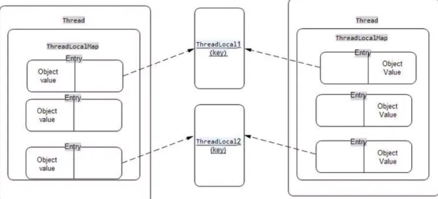

ThreadLocal的底层实现原理

ThreadLocal是Java中的一个线程封闭工具类，它提供了一种在多线程环境下保持变量的线程隔离机制。ThreadLocal的底层实现原理可以简单描述如下：
- 每个Thread对象都维护了一个ThreadLocalMap对象。ThreadLocalMap是一个用于存储ThreadLocal变量的数据结构，它的实现类似于HashMap，但是只能存储当前线程的变量，Map的key为ThreadLocal对象，Map的value为需要缓存的值。
- 每个ThreadLocal对象作为键，在ThreadLocalMap中对应一个特定的值。当通过ThreadLocal对象的get()方法获取值时，实际是通过当前线程的ThreadLocalMap对象找到对应的值。
- 当ThreadLocal对象失去引用时，由于ThreadLocalMap中的Entry对象只持有ThreadLocal对象的弱引用，而不是强引用，因此在下一次垃圾回收时，Entry对象将会被回收，同时对应的值也会被回收。
ThreadLocal的常用场景包括：
- 保存线程私有数据：通过ThreadLocal，可以在一个线程中将变量与其他线程隔离开来，保证线程安全。
- 数据库连接管理：每个线程都可以拥有自己的数据库连接，避免了在多线程环境下的数据库连接共享问题。
- 用户登录信息管理：在Web应用中，可以通过ThreadLocal来存储和获取用户的登录信息，避免了传递和存储用户信息的麻烦。
- 事务管理：线程可以通过ThreadLocal存储事务上下文，用于管理事务的提交、回滚等操作。
如何防止ThreadLocaL内存泄漏
如果在线程池中使用ThreadLocal会造成内存泄漏，因为当ThreadLocal对象使用完之后，应该要把设置的key，value，也就是Entry对象进行回收，但线程池中的线程不会回收，而线程对象是通过强引用指向ThreadLocalMap，ThreadLocalMap也是通过强引用指向Entry对象，线程不被回收，Entry对象也就不会被回收，从而出现内存泄漏，解决办法是，在使用了ThreadLocal对象之后，手动调用ThreadLocal的remove方法，手动清除Entry对象